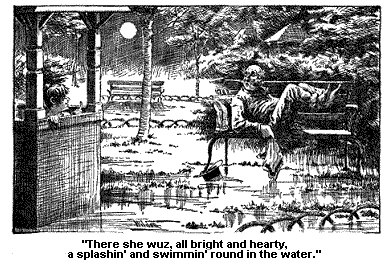

ADVENTURES AT VARIOUS SPRINGS.
A few days after this, Josiah Allen came in, and sez he, "The Everlastin' spring is the one for me, Samantha! I believe it will keep me alive for hundreds and hundreds of years."
Sez I, "I don't believe that, Josiah Allen."
"Wall, it is so, whether you believe it or not. Why, I see a feller just now who sez he don't believe anybody would ever die at all, if they kep' themselves' kind a wet through all the time with this water."
Sez I, "Josiah Allen, you are not talkin' Bible. The Bible sez, 'all flesh is as grass.'"
"Wall, that is what he meant; if the grass wuz watered with that water all the time, it would never wilt."
"Oh, shaw!" sez I. (I seldom say shaw, but this seemed to me a time for shawin'.)
But Josiah kep' on, for he wuz fearfully excited. Sez he, "Why,
the feller said, there wuz a old man who lived right by the side of this
spring, and felt the effects of it inside and out all the time, it wuz
so healthy there. Why the old man kep' on a livin',
and a livin' till he got to be a hundred. And he wuz kinder lazy
naturally and he got tired of livin'. He said he wuz tired of gettin'
up mornin's and dressin' of him, tired of pullin' on his boots and drawin'
on his trowsers, and he told his grandson Sam to take him up to Troy and
let him die.
"Wall, Sam took him up to Troy, and he died right away, almost. And Sam bein' a good-hearted chap, thought it would please the old man to he buried down by the spring, that healthy spot. So he took him back there in a wagon he borrowed. And when he got clost to the spring, Sam heard a sithe, and he looked back, and there the old gentleman wuz a settin' up a leanin' his head on his elbo and he sez, in a sort of a sad way, not mad, but melanecolly, `You hadn't ort to don it, Sam. You hadn't ort to. I'm in now for another hundred years.'"
I told Josiah I didn't believe that. Sez I, "I believe the waters are good, very good, and the air is healthy here in the extreme, but I don't believe that."
But he said it wuz a fact, and the feller said he could prove it. "Why," Josiah sez, "with the minerals there is in that spring, if you only take enough of it, I don't see how anybody can die." And sez Josiah, "I am a goin' to jest live on that water while I am here."
"Wall," sez I, "you must do as you are a mind to, with fear and tremblin'."
I thought mebby quotin' Scripture to him would kinder quell him down, for he wuz fearfully agitated and wrought up about the Everlastin' spring. And he begun at once to calculate on it, on how much he could drink of it, if he begun early in the mornin' and drinked late at night.
But I kep' on megum. I drinked the waters that seemed to help me and made me feel better, but wuz megum in it, and didn't get over excited about any on 'em. But oh! oh! the quantities of that water that Josiah Allen took! Why, it seemed as if he would make a perfect shipwreck of his own body, and wash himself away, till one day he came in fearful excited agin, and sez he, in agitated axents, "I made a mistake, Samantha. The Immortal spring is the one for me."
"Why?" sez I.
"Oh, I have jest seen a feller that has been a tellin' me about it."
"What did he say?" sez I, in calm axents.
"Wall, I'll tell you. It has acted on my feelin's dretful." Says he, "I have shed some tears." (I see Josiah Allen had been a cryin' when he came in.)
And I sez agin, "What is it?"
"Wall," he said, "this man had a dretful sick wife. And he wuz a carryin' her to the Immortal spring jest as fast as he could, for he felt it would save her, if he could get her to it. But she died a mile and a half from the spring. It wuz night, for he had traveled night and day to get her there, and the tarvens wuz all shut up, and he laid her on the spring-house floor, and laid down himself on one of the benches. He took a drink himself, the last thing before he laid down, for he felt that he must have sunthin' to sustain him in his affliction.
"Wall, in the night he heard a splashin', and he rousted up, and he see that he had left the water kinder careless the night before, and it had broke loose and covered the floor and riz up round the body, and there she wuz, all bright and hearty, a splashin' and a swimmin' round in the water." He said the man cried like a child when he told him of it.

And sez Josiah, "It wuz dretful affectin'. It brought tears from me, to hear on't. I thought what if it had been you, Samantha!"
"Wall," sez I, "I don't see no occasion for tears, unless you would have been sorry to had me brung to."
"Oh!" sez Josiah, "I didn't think! I guess I have cried in the wrong place."
Sez I coldly, "I should think as much."
And Josiah put on his hat and hurried out. He meant well. But it is quite a nack for pardners to know jest when to cry, and when to laff.
Wall, he follered up that spring, and drinked more, fur more than wuz good for him of that water. And then anon, he would hear of another one, and some dretful big story about it, and he would foller that up, and so it went on, he a follerin' on, and I a bein' megum, and drinkin' stiddy, but moderate. And as it might be expected, I gained in health every day, and every hour. For the waters is good, there haint no doubt of it.
But Josiah takin' em as he did, bobbin' round from one to the other, drinkin' 'em at all hours of day and night, and floodin' himself out with 'em, every one on 'em -- why, he lost strength and health every day, till I felt truly, that if it went on much longer, I should go home in weeds. Not mullein, or burdock, or anything of that sort, but crape.
But at last a event occurred that sort a sot him to thinkin' and quelled him down some. One day we sot out for a walk, Josiah and Ardelia Tutt and me. And in spite of all my protestations, my pardner had drinked 11 glasses full of the spring he wuz a follerin' then. And he looked white round the lips as anything. And Ardelia and I wuz a sittin' in a good shady place, and Josiah a little distance off, when a man ackosted him, a man with black eyes and black whiskers, and sez, "You look pale, Sir. What water are you a drinkin'?"
And Josiah told him that at that time he wuz a drinkin' the water from the Immortal spring.
"Drinkin' that water?" sez the man, startin' back horrefied.
"Yes," sez Josiah, turnin' paler than ever, for the man's looks wuz skairful in the extreme.
"Oh! oh!" groaned the man. "And you are a married man?" he groaned out mournfully, a lookin' pitifully at him. "With a family?"
"Yes," sez Josiah, faintly.
"Oh dear," sez the man, "must it be so, to die, so -- so lamented?"
"To die!" sez Josiah, turnin' white jest round the lip.
"Yes, to die! Did you not say you had been a drinkin' the water from the Immortal spring?"
"Yes," sez Josiah.
"Wall, it is a certain, a deadly poison."
"Haint there no help for me?" sez Josiah.
"Yes," sez the man, "You must drink from the Live-forever spring, at the other end of the village. That water has the happy effect of neutralizin' the poisons of the Immortal spring. If anything can save you that can. Why," sez he, "folks that have been entirely broke down, and made helpless and hopeless invalids, them that have been brung down on their death-beds by the use of that vile Immortal water, have been cured by a few glasses of the pure healin' waters of the Live-forever spring. I'd advise you for your own sake, and the sake of your family, who would mourn your ontimely decese, to drink from that spring at once."
"But," sez Josiah, with a agonized and hopeless look, "I can't drink no more now."
"Why?" sez the man.
"Because I don't hold any more. I don't hold but two quarts, and I have drinked 11 tumblers full now."
"Eleven glasses of that poison?" sez the man.
"Wall, if it is too late I am not to blame. I've warned you. Farewell," sez he, a graspin' holt of Josiah's hand. "Farewell, forever. But if you do live," sez he, "if by a miricle you are saved, remember the Live-forever spring. If there is any help for you it is in them waters."
And he dashed away, for another stranger wuz approachin' the seen.
I, myself, didn't have no idee that Josiah wuz a goin' to die. But Ardelia whispered to me, she must go back to the hotel, so she went. I see she looked kinder strange, and I didn't object to it. And when we got back she handed me some verses entitled:
"Stanzas on the death of Josiah Allen."
She handed 'em to me, and hastened away, quick. But Josiah Allen didn't die. And this incident made him more megum. More as I wanted him to be. Why, you have to be megum in everything, no matter how good it is. Milk porridge, or the Bible, or anything. You can kill yourself on milk porridge if you drink enough. And you can set down and read the Bible, till you grow to your chair, and lose your eyesight.
Now these waters are dretful good, but you have got to use some megumness
with 'em, it stands to reason you have. Taint megum to drink from
10 to 12 glasses at a time, and mix your drinks goin' round from spring
to spring like a luny. No; get a good doctor to tell you what minerals
you seem to stand in need on the most, and then try to get 'em with fear
and tremblin'. You'll get help I haint a doubt on't. For they
are dretful good for varius things that afflict the human body. Dretful!